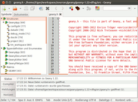
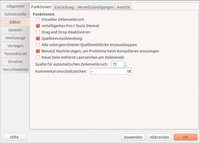

Geany
Dieser Artikel wurde für die folgenden Ubuntu-Versionen getestet:
Ubuntu 16.04 Xenial Xerus
Ubuntu 14.04 Trusty Tahr
Zum Verständnis dieses Artikels sind folgende Seiten hilfreich:
Ein Terminal öffnen, optional
Einen Editor öffnen, optional
Archive entpacken, optional
Pakete aus dem Quellcode erstellen, optional
 Texteditoren gibt es in der Linux-Welt reichlich, IDEs (Integrated Development Environments, deutsch Entwicklungsumgebungen) zum Programmieren ein paar weniger, aber immer noch genug. Schwer wird es, wenn man eine Mischung aus beiden sucht, das heißt eine kleine und schnelle IDE, die man auch als Texteditor nutzen kann. Hier kommt Geany ins Spiel.
Texteditoren gibt es in der Linux-Welt reichlich, IDEs (Integrated Development Environments, deutsch Entwicklungsumgebungen) zum Programmieren ein paar weniger, aber immer noch genug. Schwer wird es, wenn man eine Mischung aus beiden sucht, das heißt eine kleine und schnelle IDE, die man auch als Texteditor nutzen kann. Hier kommt Geany ins Spiel.
Geany  ist genau dieser leichtgewichtige Texteditor mit IDE-Funktionalität, der auf dem GTK-Toolkit basiert und sich damit in alle Desktop-Umgebungen wie GNOME, LXDE oder Xfce einpassen kann. Als Grundlage für Geany dient Scintilla , aus dem der ebenfalls recht gute Editor SciTE entstanden ist.
ist genau dieser leichtgewichtige Texteditor mit IDE-Funktionalität, der auf dem GTK-Toolkit basiert und sich damit in alle Desktop-Umgebungen wie GNOME, LXDE oder Xfce einpassen kann. Als Grundlage für Geany dient Scintilla , aus dem der ebenfalls recht gute Editor SciTE entstanden ist.

Zu den erwähnenswerten Funktionen von Geany gehören:
Syntaxhervorhebung (Highlighting) – Unterstützung der meisten Programmier-, Skript- und Markup-Sprachen wie C/C++, Java, Perl, PHP, Python, HTML, XML, LaTeX, etc.
Falteneditor – einzelne, zusammengehörige Codeteile können ausgeblendet werden.
Codevervollständigung – häufig benutzte Konstrukte wie beispielsweise
for-Schleifen werden eigenständig ergänzt.Seitenleiste – in der Seitenleiste werden alle wichtigen Klassen, Funktionen und Variablen mitsamt Zeilennummer aufgelistet und können direkt angesprungen werden.
Status- und Terminalfenster – im unteren Bereich werden aktuelle Statusmeldungen oder Compiler-Fehler angezeigt. Dort findet man auch ein integriertes Terminal.
Kompilieren per Makefile – durch ein gegebenes Makefile kann eigentlich jeder Code kompiliert werden. Das Makefile muss man aber selbst erstellen.
Weitere Funktionen sind automatische Codeeinrückung, Veränderung des Einzugs, Tabulator-Ersetzung, blockweises Kommentieren, Zoomfunktion, Export in HTML oder LaTeX und vieles mehr.
Installation¶
Geany wird bereits seit 2005 entwickelt. Das Programm kann über folgendes Paket installiert werden [1]:
geany (universe)
 mit apturl
mit apturl
Paketliste zum Kopieren:
sudo apt-get install geany
sudo aptitude install geany
PPA¶
Bei Bedarf kann man auch das "Personal Package Archiv" (PPA] [2] der Entwickler nutzen:
Adresszeile zum Hinzufügen des PPAs:
ppa:geany-dev/ppa
Hinweis!
Zusätzliche Fremdquellen können das System gefährden.
Ein PPA unterstützt nicht zwangsläufig alle Ubuntu-Versionen. Weitere Informationen sind der  PPA-Beschreibung des Eigentümers/Teams geany-dev zu entnehmen.
PPA-Beschreibung des Eigentümers/Teams geany-dev zu entnehmen.
Damit Pakete aus dem PPA genutzt werden können, müssen die Paketquellen neu eingelesen werden.
Nach dem Aktualisieren der Paketquellen erfolgt die Installation wie oben angegeben.
Benutzung¶
Geany steht im Menü unter "Entwicklung -> Geany" zur Verfügung.

Das Programm lässt sich ähnlich wie jeder normale Texteditor benutzen. Entweder weist man im Dateimanager einem Dateityp direkt Geany zu oder man öffnet die Datei per Kontextmenü. Das Vorgehen hängt dabei aber von der verwendeten Oberfläche und dem verwendeten Dateimanager ab. Natürlich kann man die Dateien auch direkt in Geany über das "Datei"-Menü öffnen.
Geany kann insgesamt recht intuitiv bedient werden, zumal auch alle Elemente in Deutsch gehalten sind. Die Menüeinträge erklären sich intuitiv und auch die Einstellungen unter "Bearbeiten -> Einstellungen" sind größtenteils selbsterklärend. Zusätzlich tragen sie alle einen Tooltip-Hinweis, wenn man mit der Maus über einen Eintrag fährt.
Wer doch Hilfe braucht, findet in der Dokumentation ein ausführliches, in Englisch gehaltenes Handbuch, welches online zusätzlich als Textdatei zur Verfügung steht. Dieses Handbuch ist aber auch unter /usr/share/doc/geany/html/index.html lokal vorhanden. Am leichtesten lernt man den Umgang, indem man regelmäßig mit Geany arbeitet.
Experten-Info:
Selten gebraucht, aber dann äußerst nützlich ist die Funktion "Spaltenmarkierung" (statt der normalen Markierung). Dazu vor dem Markieren die Tasten Strg + ⇧ gedrückt halten.
Projektmanagement¶
Das Projektmanagement ist aktuell nur in rudimentären Zügen vorhanden. Alle Dateien, die zuletzt in Geany geöffnet waren, werden bei einem erneuten Start des Programms sowieso wieder aufgerufen (wenn dies gewünscht ist). Hierzu benötigt man also keine Projektverwaltung. Projektdateien, die man über "Projekt -> Neu" erstellen bzw. "Projekt -> Öffnen" öffnen kann, sind insoweit hilfreich, als dass die Wahl von "Erstellen -> Make all" ein Makefile im Projektverzeichnis sucht und nicht dort, wo die aktuell geöffnete Datei gespeichert ist. Das bedeutet, man kann das Makefile an einem anderen Ort platzieren als die zugehörigen Dateien und so für Ordnung sorgen.
Weitere Funktionen¶
Geany hat noch ein paar spezielle Funktionen implementiert, die gegebenenfalls hilfreich sein können. Wer Webdesigns erstellt, dem hilft sicher der "Farbwähler", zu finden im Menü "Werkzeuge", oder auch die Möglichkeit HTML-Sonderzeichen über eine ausführliche Liste einzufügen.
Im gleichen Menü findet man unter "Klassen erstellen" auch einen Klassengenerator für C++ und GTK+. Dieser erstellt auf Wunsch eine Quell- und zugehörige Header-Datei, in der automatisch alle Definitionen bzw. Deklarationen von Konstruktor und Destruktor eingetragen werden. Auch wird der Lizenztext der GPL (aktuell in der Version 2) am Anfang der Dateien automatisch eingefügt.
Export¶
Für Darstellungszwecke dient noch die erwähnenswerte "Export"-Funktion, mit der man die aktuelle Datei mitsamt der Syntax-Hervorhebung in eine HTML- oder LaTeX-Datei schreiben kann. Einziges Problem beim LaTeX-Export: es gibt für das Paket inputenc keine Option utf8x, weshalb man dies durch utf8 ersetzen muss. Zeile 4 sollte danach wie folgt aussehen:
1 | \usepackage[utf8]{inputenc} |
Problembehebung¶
Links¶
ReleaseNotes
- VeröffentlichungshinweiseExtras
auf der Projektseite.Manual
- BenutzerhandbuchExtras
- Snippets, Farbschemata, Tags, Skripte usw.Wiki
- Dokumentation zu Farbschemata, Tagdateien, Snippets u.a.
Geany für Code und Text
 - heise Open Source, 10/2012
- heise Open Source, 10/2012Webeditoren unter Ubuntu/Linux Teil 3: Geany
- Blogbeitrag, 06/2009Editoren
 Übersichtsartikel
Übersichtsartikel
- Erstellt mit Inyoka
-
 2004 – 2017 ubuntuusers.de • Einige Rechte vorbehalten
2004 – 2017 ubuntuusers.de • Einige Rechte vorbehalten
Lizenz • Kontakt • Datenschutz • Impressum • Serverstatus -
Serverhousing gespendet von